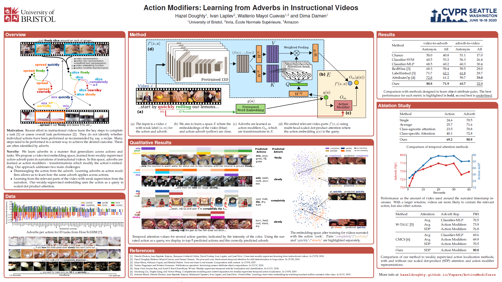

Abstract
We present a method to learn a representation for adverbs from instructional videos using weak supervision from the accompanying narrations. Key to our method is the fact that the visual representation of the adverb is highly dependant on the action to which it applies, although the same adverb will modify multiple actions in a similar way. For instance, while 'spread quickly' and 'mix quickly' will look dissimilar, we can learn a common representation that allows us to recognize both, among other actions.
We formulate this as an embedding problem, and use scaled dot-product attention to learn from weakly-supervised video narrations. We jointly learn adverbs as invertible transformations operating on the embedding space, so as to add or remove the effect of the adverb. As there is no prior work on weakly supervised learning from adverbs, we gather paired action-adverb annotations from a subset of the HowTo100M dataset for 6 adverbs: quickly/slowly, finely/coarsely, and partially/completely. Our method outperforms all baselines for video-to-adverb retrieval with a performance of 0.719 mAP. We also demonstrate our model's ability to attend to the relevant video parts in order to determine the adverb for a given action.
Poster
Downloads
Bibtex
@article{doughty2020action,
author = {Doughty, Hazel and Laptev, Ivan and Mayol-Cuevas, Walterio and Damen, Dima},
title = {{A}ction {M}odifiers: {L}earning from {A}dverbs in {I}nstructional {V}ideos},
booktitle = {The IEEE Conference on Computer Vision and Pattern Recognition (CVPR)},
year = {2020}
}
Acknowledgements
This research is supported by an EPSRC DTP, EPSRC GLANCE (EP/N013964/1) , Louis Vuitton ENS Chair on Artifical Intelligence, the MSR-Inria joint lab and the French government under management of Agence Nationale de la Recherche as part of the "Investissements d’avenir" program, reference ANR-19-P3IA-0001 (PRAIRIE 3IA Institute)